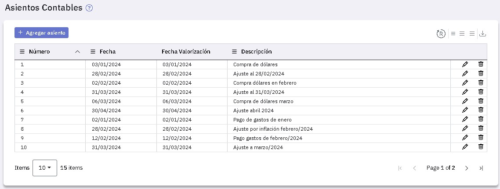
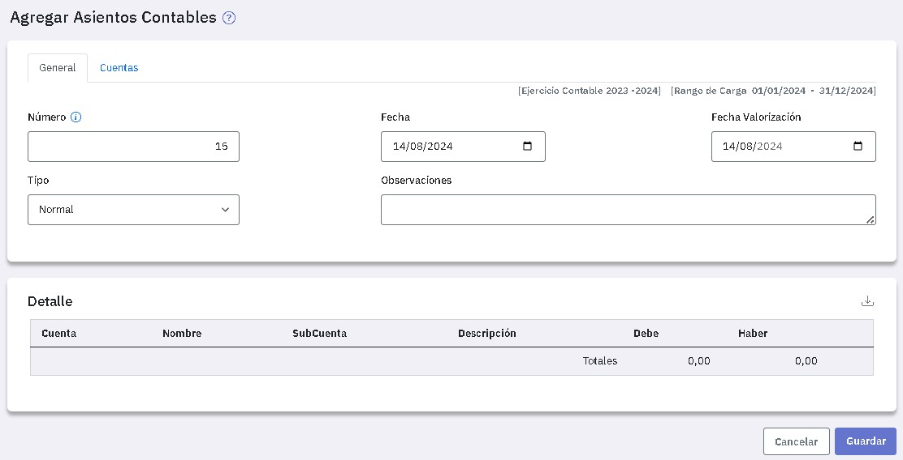
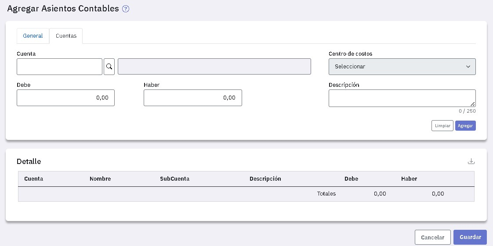
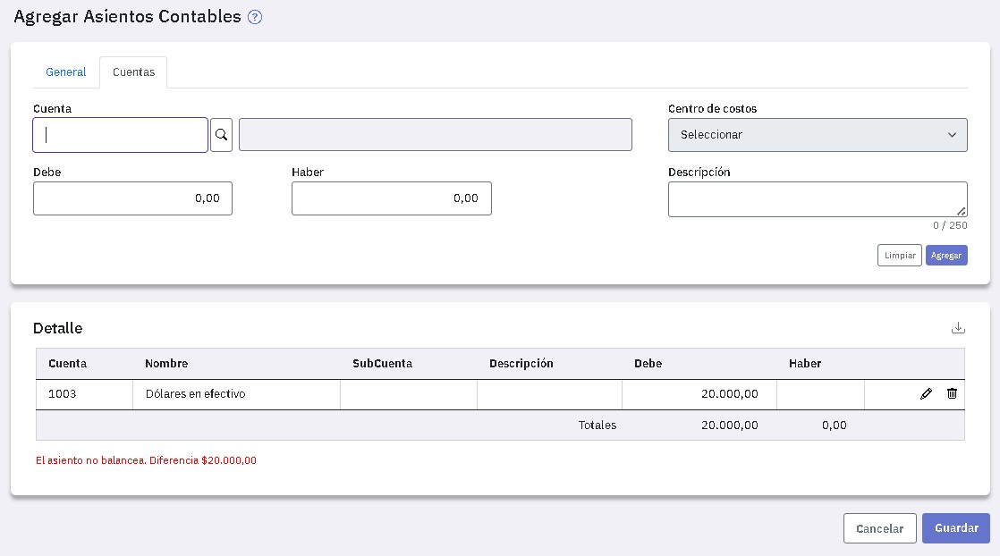
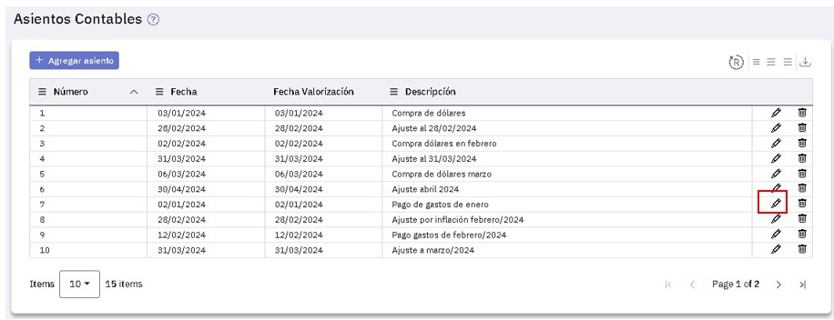
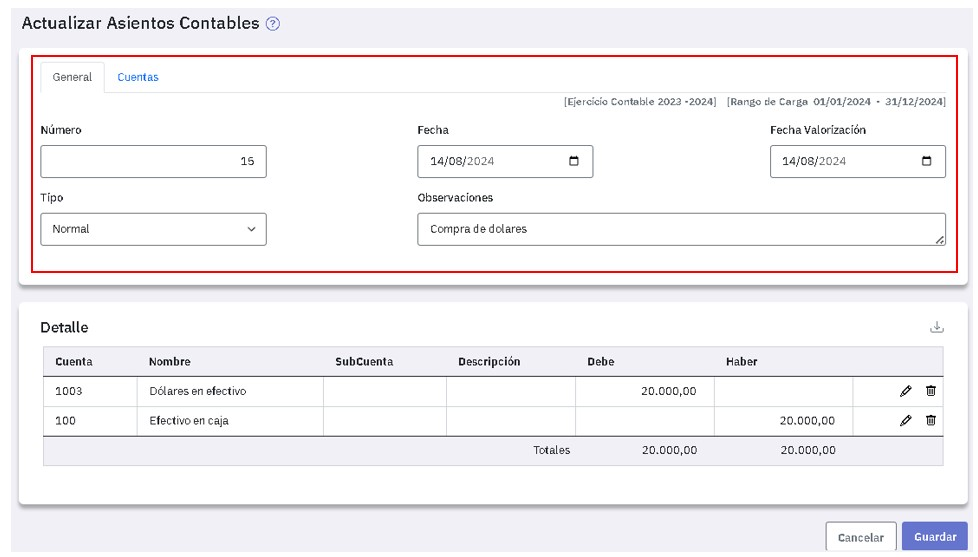
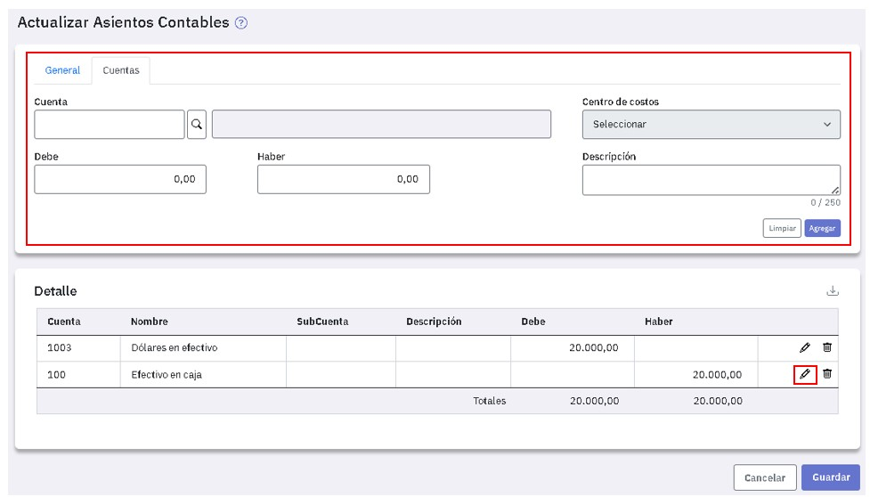
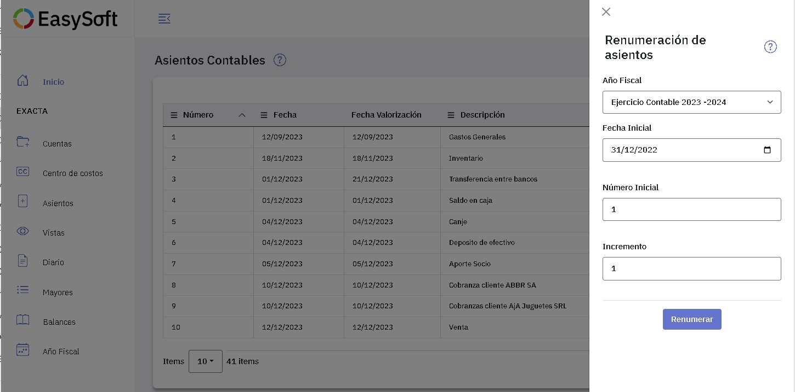

Carga de asientos en el Diario General
Al ingresar a la pantalla de Asientos contables se exhiben los asientos ya registrados.
Desde ahí podes ingresar nuevos asientos y también modificar y eliminar los que ya registraste.

Registrar de asientos
Para agregar un nuevo asiento tenes que presionar y completar la información de las solapas "General" y "Cuentas".
Solapa General
Esta es la primera solapa que se presenta y te ofrece el próximo número de asiento a ingresar, la fecha del día y el tipo "Normal".

Los datos en esta solapa son:
- Normal
- Ajuste
- Apertura
- Cierre
- Redistribución
Las cuentas que conforman el asiento se ingresan en la solapa "Cuentas" y se muestran en la zona "Detalle" de esta solapa.
Solapa Cuentas
En esta solapa tenes que ingresar, una a una, las cuentas a imputar en el asiento.

Si la cuenta que informas requiere centro de costos lo podes seleccionar a la derecha de la misma.
Ingresá el importe de la línea al debe o al haber y si es necesario un texto aclaratorio, luego presioná "Agregar".
Tu primer línea del asiento está ingresada y, de igual manera, deberás ingresar las restantes.

Observá que EasySoft controla que el asiento balancee y no podrás guardarlo hasta tanto el debe y el haber coincidan.
Al completar el asiento ya estás en condiciones de guardarlo.
Modificación de asientos
Para modificar un asiento ubicate en la línea del mismo y presioná  .
.
Vas a poder agregar lineas y también modificar y eliminar algunas de las existentes.

Podes modificar el encabezado del asiento, o bien en la solapa Cuentas podes agregar una nueva.

Si queres modificar una línea del asiento, ubicate en ella y presioná , los datos se copian a la zona superior y podes modificarlos libremente. Para grabar la línea modificada presioná "Reemplazar".

Renumeración de asientos
Para renumerar asientos tenes que presionar el icono y, en la ventana que se abre a la derecha, completar los datos.

Podes renumerar los asientos de un año fiscal abierto; tenes que indicar una fecha en "Fecha inicial", esta es la fecha a partir de la cual queres realizar la renumeración.
Verás cual es el mayor número de asiento cargado hasta el día anterior a la fecha que indicaste. Tenes que renumerar desde un número
En la pantalla anterior, como el mayor número usado es 6, podés renumerar desde 7 o un número mayor.
Los asientos se renumeran a partir del número que indicaste en "Número inicial" y con el incremento que informes; en el ejemplo, de uno en uno.